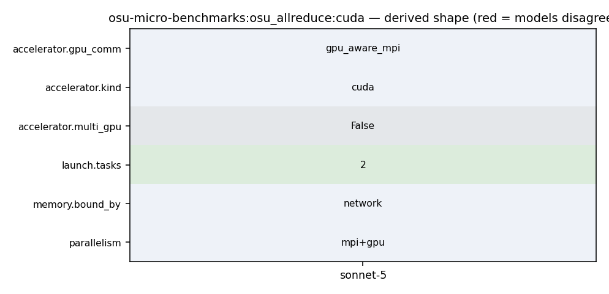

mpirun_rsh -np 2 -hostfile hostfile MV2_USE_CUDA=1 osu_allreduce -d cuda D D
1037 1038 Examples: 1039 1040 - mpirun_rsh -np 2 -hostfile hostfile MV2_USE_CUDA=1 osu_latency D D 1041 - mpirun_rsh -np 2 -hostfile hostfile MV2_USE_ROCM=1 osu_latency D D 1042 1043 In this run, the latency test allocates buffers at both rank 0 and rank 1 on
42 po_ret = process_options(argc, argv); 43 omb_populate_mpi_type_list(mpi_type_list); 44 45 if (PO_OKAY == po_ret && NONE != options.accel) { 46 if (init_accel()) { 47 fprintf(stderr, "Error initializing device\n"); 48 exit(EXIT_FAILURE); 49 } 50 } 51 52 omb_init_h = omb_mpi_init(&argc, &argv); 53 omb_comm = omb_init_h.omb_comm;
29 [], 30 [enable_openacc=no]) 31 32 AC_ARG_ENABLE([cuda], 33 [AS_HELP_STRING([--enable-cuda], 34 [Enable CUDA benchmarks (default is no). Specify 35 --enable-cuda=basic to enable basic cuda support 36 without using cuda kernel support for 37 non-blocking collectives]) 38 ], 39 [NVCC="nvcc"], 40 [enable_cuda=no]) 41 42 AC_ARG_WITH([cuda], 43 [AS_HELP_STRING([--with-cuda=@<:@CUDA installation path@:>@],
75 break; 76 } 77 78 if (numprocs < 2) { 79 if (rank == 0) { 80 fprintf(stderr, "This test requires at least two processes\n"); 81 } 82 83 omb_mpi_finalize(omb_init_h); 84 exit(EXIT_FAILURE); 85 } 86 bufsize = (options.max_message_size); 87 if (allocate_memory_coll((void **)&sendbuf, bufsize, options.accel)) { 88 fprintf(stderr, "Could Not Allocate Memory [rank %d]\n", rank);
161 } 162 163 t_start = MPI_Wtime(); 164 MPI_CHECK(MPI_Allreduce(sendbuf, recvbuf, num_elements, 165 omb_curr_datatype, MPI_SUM, omb_comm)); 166 t_stop = MPI_Wtime(); 167 MPI_CHECK(MPI_Barrier(omb_comm)); 168 169 if (options.validate) {
84 exit(EXIT_FAILURE); 85 } 86 bufsize = (options.max_message_size); 87 if (allocate_memory_coll((void **)&sendbuf, bufsize, options.accel)) { 88 fprintf(stderr, "Could Not Allocate Memory [rank %d]\n", rank); 89 MPI_CHECK(MPI_Abort(omb_comm, EXIT_FAILURE)); 90 } 91 set_buffer(sendbuf, options.accel, 1, bufsize); 92 omb_buffer_sizes.sendbuf_size = bufsize; 93 sendbuf_warmup = sendbuf; 94 95 bufsize = (options.max_message_size); 96 if (allocate_memory_coll((void **)&recvbuf, bufsize, options.accel)) { 97 fprintf(stderr, "Could Not Allocate Memory [rank %d]\n", rank); 98 MPI_CHECK(MPI_Abort(omb_comm, EXIT_FAILURE)); 99 }
1038 break; 1039 } else 1040 #endif 1041 #ifdef _ENABLE_CUDA_ 1042 { 1043 CUDA_CHECK(cudaMemset(buffer, data, size)); 1044 } 1045 #endif 1046 #ifdef _ENABLE_ROCM_ 1047 { 1048 ROCM_CHECK(hipMemset(buffer, data, size));